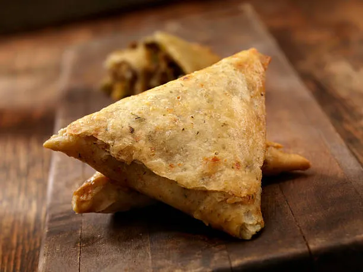

Back to home page
Beef Samosa

Description
Beef samosas are savory, deep-fried pastries filled with a spiced minced beef mixture, often including potatoes, peas, and a blend of aromatic spices, commonly served as an appetizer or snack across South Asian cuisines. They are known for their crispy exterior and rich, flavorful filling.
Ingredients
- Ground beef: 1 lb (450 g)
- Potatoes: 2 medium (peeled and diced or mashed)
- Frozen peas: 1 cup (defrosted if frozen)
- Onions: 2 large (finely chopped or sliced)
- Garlic: 4 cloves (minced)
- Ginger: 1 tbsp (finely sliced or grated)
- Vegetable oil: 2–3 tbsp (for cooking filling)
- Cumin seeds: ½ tsp
- Ground cumin: 1 tsp
- Ground coriander: 1 tsp
- Ground turmeric: 1 tsp
- Chilli powder: 1 tsp (medium heat)
- Ground cardamom: ½ tsp
- Ground cinnamon: ½ tsp
- Ground black pepper: ½ tsp
- Bay leaf: 1 (crushed)
- Fresh coriander: ½ cup (chopped)
- Green chillies: 2 (sliced)
- Filo pastry or samosa pastry sheets: 16–30 sheets (depending on recipe)
- Flour: 1 tbsp (for slurry)
- Water: 1–2 tbsp (for slurry)
- Egg: 1 (beaten, for egg wash)
- Melted butter: ¼ cup (optional, for flavor)
Steps
- Bring a medium saucepan of lightly salted water to a boil. Add the potatoes and peas; cook until potatoes are tender but still firm, about 15 minutes. Drain, mash together, and set aside.
- In a large saucepan, heat 2 tablespoons of oil over medium-high heat. Add cumin seeds and bay leaf; stir until fragrant and seeds are browned.
- Add the ground beef and onions; cook until the beef is browned and crumbly and the onions are soft, about 5 to 7 minutes.
- Stir in the garlic and ginger. Season with salt, cumin, coriander, turmeric, chili powder, cinnamon, cardamom, and black pepper. Stir in the mashed potato mixture. Remove from heat and chill in the refrigerator for 1 hour, or until cool.
- Once cooled, mix in the chopped green chillies and coriander.
- Prepare the pastry: If using filo, moisten the edges with a damp finger to seal. If using samosa sheets, create a slurry with 1 tbsp flour and 1–2 tbsp water to seal edges.
- Place 1–2 tablespoons of filling in the center of each pastry sheet. Fold into a triangle or cone shape, sealing the edges with the slurry or moistened finger.
- Heat oil in a deep-sided pan to 175°C (350°F).
- Heat oil in a deep-sided pan to 175°C (350°F). Carefully lower the samosas into the oil in batches, frying until golden brown, about 3–5 minutes.
- Remove with a slotted spoon and place on paper towels to drain excess oil.
- Serve warm with chutneys, raita, or as part of a meal.